Mazowieckie
Najważniejsze miasta
Warszawa
Warszawa, miasto stołeczne Warszawa[3] (m.st. Warszawa)[4] – stolica Polski[5] i województwa mazowieckiego[6], najludniejsze miasto w kraju i drugie (po Gdańsku) pod względem powierzchni[1], 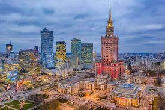Zamek Królewski
Barokowo-klasycystyczna rezydencja królów Polski, odbudowana po II wojnie światowej. W środku można podziwiać bogato zdobione sale, królewskie apartamenty i obrazy Canaletta.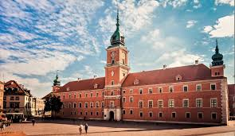
Muzeum Powstania Warszawskiego
Interaktywne muzeum poświęcone bohaterom Powstania Warszawskiego z 1944 roku. Ekspozycja łączy archiwalne nagrania, rekwizyty wojenne i multimedialne instalacje.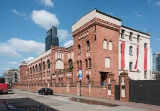
Łazienki Królewskie
Rozległy park z pałacem na wodzie, amfiteatrem i pomnikiem Chopina. Miejsce to zachwyca pięknem przyrody i bogatą historią.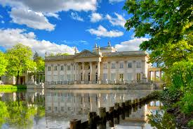
Płock
Płock – miasto w Polsce, na prawach powiatu, położone na Pojezierzu Dobrzyńskim i w Kotlinie Płockiej, nad Wisłą, w województwie mazowieckim, siedziba ziemskiego powiatu płockiego; historyczna stolica Mazowsza oraz stolica Polski w latach 1079–1138; 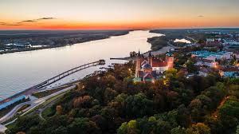Katedra Wniebowzięcia NMP
Jedna z najstarszych katedr w Polsce, skrywająca groby władców Polski. W jej wnętrzu można podziwiać piękne freski i słynną Złotą Bramę.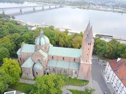
Muzeum Mazowieckie
Słynie z unikalnej kolekcji secesji, prezentującej meble, obrazy i biżuterię z przełomu XIX i XX wieku. To prawdziwa gratka dla miłośników sztuki i designu.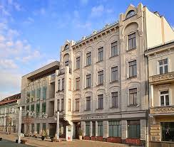
Bulwary nad Wisłą
Nowoczesna promenada idealna na spacery i relaks. Latem odbywają się tu koncerty, festiwale i pokazy plenerowe.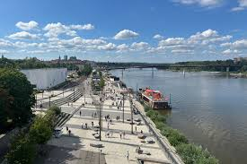
Radom
Radom – miasto na prawach powiatu w centralno-wschodniej Polsce w województwie mazowieckim, położone nad rzeką Mleczną. Największy ośrodek miejski w widłach Wisły i Pilicy, drugie pod względem wielkości miasto województwa mazowieckiego. 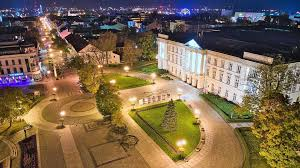Muzeum Wsi Radomskiej
Skansen prezentujący tradycyjne drewniane chaty, młyny i kuźnie z regionu. To świetne miejsce, by poczuć klimat dawnej wsi mazowieckiej.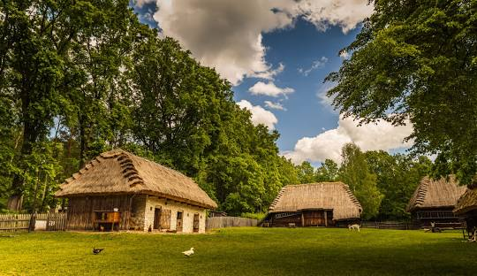
Zamek Królewski w Radomiu
Pozostałości średniowiecznego zamku, który niegdyś był ważnym ośrodkiem władzy. Obecnie na jego terenie odbywają się wydarzenia kulturalne i rekonstrukcje historyczne.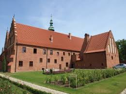
Deptak na ulicy Żeromskiego
Główna arteria miasta, pełna klimatycznych kawiarni i zabytkowych kamienic. To idealne miejsce na spacer i poznanie historycznego centrum Radomia.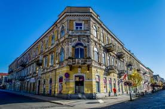